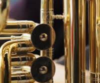

Brass
Strings

Woodwinds

String instruments, stringed instruments, or chordophones are musical instruments that produce sound from vibrating strings when the performer plays or sounds the strings in some manner. Musicians play some string instruments by plucking the strings with their fingers or a plectrum—and others by hitting the strings with a light wooden hammer or by rubbing the strings with a bow. In some keyboard instruments, such as the harpsichord or piano, the musician presses a key that plucks the string or strikes it with a hammer. With bowed instruments, the player rubs the strings with a horsehair bow, causing them to vibrate. With a hurdy-gurdy, the musician operates a mechanical wheel that rubs the strings.